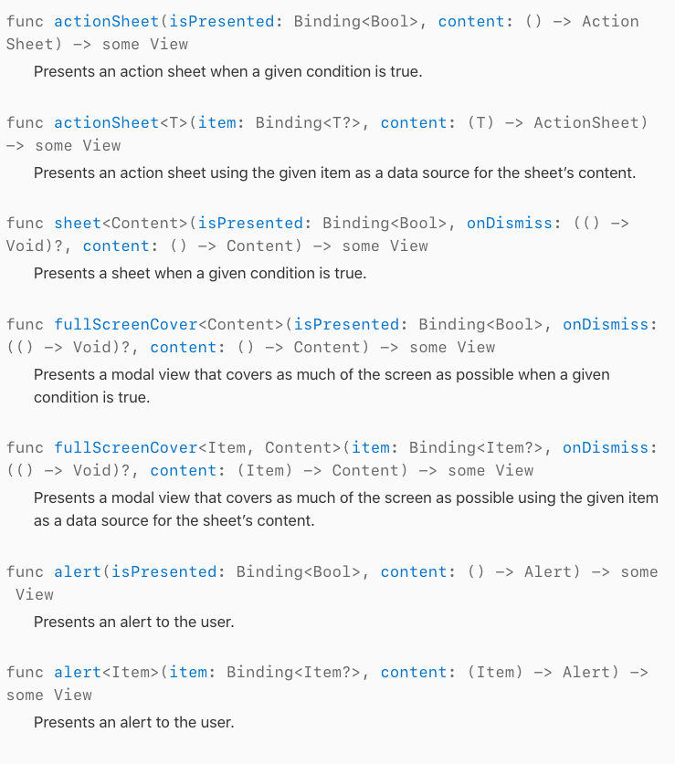
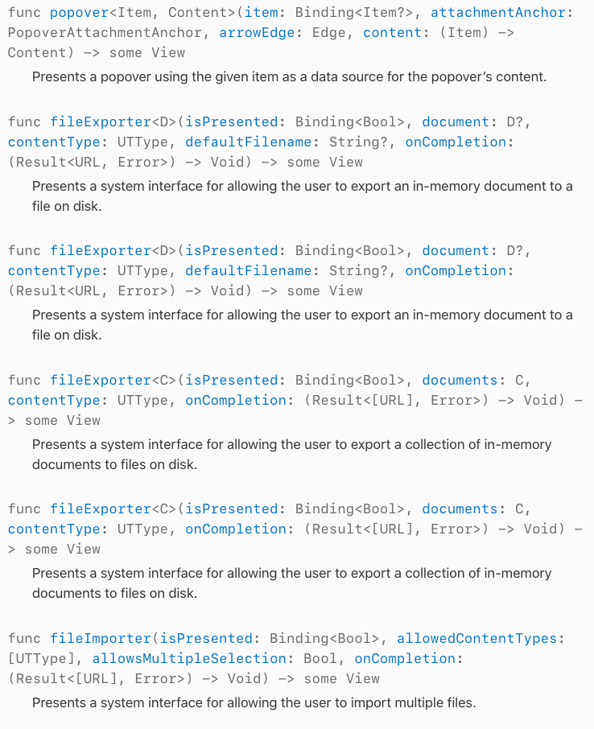
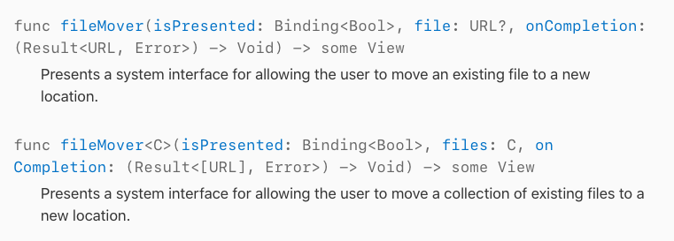

难点
页面跳转
开新页面
配合 NavigationLink 跳转
1
2
3
4
5
6
7
8
9
10
11
12
13
14NavigationLink(destination: BookDetailView(book: account)) {
Image(systemName: account.cover ?? "")
VStack(alignment: .leading) {
Text(account.name ?? "")
HStack {
Text("\(String.init(format: "收入 %.2f", account.income))")
.font(.subheadline)
.foregroundColor(.secondary)
Text("\(String.init(format: "支出 %.2f", account.expand))")
.font(.subheadline)
.foregroundColor(.orange)
}
}
}事件跳转 及API使用
1
2
3
4
5
6
7Button.init("添加", action: {
self.isAccountAddViewPresented = true
}).fullScreenCover(isPresented: $isAccountAddViewPresented, onDismiss: {
self.requestData()
}, content: {
AccountBookAddView(isPresented: self.$isAccountAddViewPresented)
})


返回上一页
利用 @State 和 @Binding配合使用
1
2
3
4
5
6
7
8
9
10
11
12
13
14
15
16
17
18
19struct View1: View {
@State private var isPresented: Bool = false
var body: some View {
Button.init("新页面", action: {
self.isPresented = true
}).sheet(isPresented: $isPresented, onDismiss: {
}, content: {
View2(isPresented: self.$isPresented)
})
}
}
struct View2: View {
@Binding var isPresented: Bool
var body: some View {
Button.init("返回", action: {
self.isPresented = false
})
}
}
数据存储
- coredata
接下来我们专门写一篇文章介绍
- userDefault
和swift一样
- coredata
生命周期
- init
- onAppear
- onDisappear
List动态数据绑定
数据流
- property
- @State
- @Binding
- @ObjectBinding
- @EnvironmentObject
- @Published
Property：当 View 所需要的属性只要求可读，则使用 Property。
@State： 当 View 所需要的属性只在当前 View 和它的 Child Views 中使用，并且在用户的操作过程中会发生变化，然后导致 View 需要作出改变，那么使用 @State。 因为只在当前 View 和它的 Child Views 中使用，跟外界无关，所以被 @State 标记的属性一般在定义时就有初始值。
@Binding：当 View 所需要的属性是从它的直接 Parent View 传入，在内部会对这个属性进行修改，并且修改后的值需要反馈给直接 Parent View，那么使用 @Binding。
@ObjectBinding：用于直接绑定外部的数据模型和 View。
@EnvironmentObject：Root View 通过 environmentObject() 把 BindableObject 注入到 View 层级中，其中的所有 Child Views 可以通过 @EnvironmentObject 来访问被注入的 BindableObject。
- Combine(与SwiftUI一起推出的响应式变成框架的一个协议)
– 待续